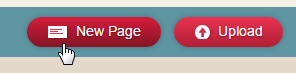
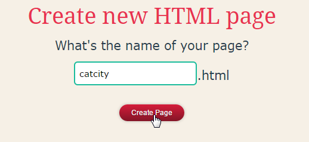

Cat City
IF you rescue five cats THEN you win a free breadmaker!
(This activity uses JavaScript and jQuery.)
What skills do I need?
IF you have tried HTML and CSS before THEN this is the right activity for you!
Part 1: Set up Neocities
IF you have a Neocities account, Log in to Neocities.org. OTHERWISE, create a new Neocities account and log in. (It's free.)
Make a new page:
Call it catcity
Open a tab to edit the new page.

Open a tab to view the new page.

Delete all the default code

Copy and Paste this code instead:
<!DOCTYPE html>
<html>
<head>
<meta charset='utf-8'>
<script src="//ajax.googleapis.com/ajax/libs/jquery/2.1.1/jquery.min.js"></script>
<title>Cat City</title>
<style>
/*This is the start of the CSS*/
body {
background-color: orange;
}
button {
background-color: lightgreen;
padding:20px;
}
.info {
font-size: 20px;
}
</style>
</head>
<body>
<h1>Cat City</h1>
<p class="info"></p>
<p class="message"></p>
<button class="button1">Buy tuna</button>
<button class="button2">Catch a cat</button>
<button class="button3">Give a cat to the SPCA</button>
<script>
//Hello! This is the start of the JavaScript.
var cats = 0;
var catfood = 4;
var medals = 0;
var breadmakers = 0;
var showInfo = function () {
$(".info").text("You have " + catfood + " tins of catfood, " + cats + " cats and " + medals + " SPCA medals.");
}
var getCat = function () {
if (catfood > 0) {
catfood = catfood - 1;
cats = cats + 1;
showInfo();
$(".message").text("You found a cat!");
} else {
$(".message").text("You need to buy more catfood first.");
}
}
$(".button2").on("click", getCat);
</script>
</body>
</html>
CHECK that you copied all the code. Save the page, then view it.

What is this?
You get an orange page with 3 buttons. One button works, two don't.
Part 2: Make the other buttons work!
We use JavaScript to make the button call a function when you click on it.
One button already works. You'll need to look at the code, see what makes it work, and make the other buttons work as well.
1. Find the JavaScript. It starts with <script> and ends with </script>
2. Find this line: $(".button2").on("click", getCat);. It is right at the end.
3. "button2" and getCat are words that appear somewhere else in the code. Can you find them, and work out what this line does?
Oops, my page stopped working?
One mistake in your JavaScript can make everything stop working!
The good news is, we can see exactly where the mistake is.
When viewing your page, open the Javascript Console. If you're using Google Chrome, press CTRL+SHIFT+I (on Windows) or CMD+OPTION+I (on Mac) then find Console in the options that pop up.
(If you are not using Google Chrome, you still have a JavaScript console. Look in the options for 'Developer Tools'
Once the console is open, refresh the page. Any errors will be listed and the console will tell you exactly which line they happen on.
Part 3: Cat City Rules
Here are the rules in Cat City:
1. You can ALWAYS buy more tuna.
2. If you have 1 or more tuna, then you can spend 1 tuna to catch 1 cat. This part is already done for you!
3. If you have 1 or more cats, then you can give 1 cat to the SPCA to get 1 medal.
Part 4: free breadmaker
If you have 5 medals, and you give the SPCA another cat, then the SPCA should give you a free breadmaker INSTEAD OF another medal.
Can you change your program to do this?
Here is a CLUE:
if (teamSize <= 4) {
alert("We fit in a car");
} else if (teamSize <= 8) {
alert ("We need a van")
} else {
alert("Hire a bus!")
}
In this example, there are THREE OPTIONS but only ONE option is picked each time.
It's a bit like if you said:
Can you get me a snack from the shop? If they have chocolate milk, I'd like a chocolate milk. Otherwise, if they have M&Ms, I'd like 2 packets of M&Ms. Otherwise some Skittles.
One more clue: && is the symbol for AND.
//if you have cats AND you have dogs
if (cats > 1 && dogs > 1) {
alert("Your house must be wild!");
}
Extra ideas
What new options should you get, now that you have a breadmaker?